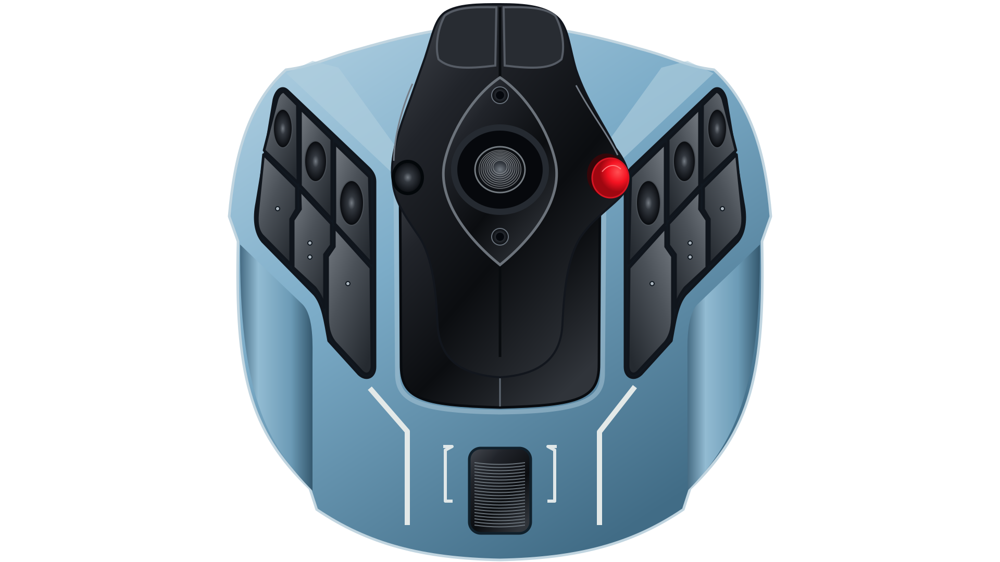
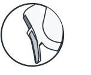
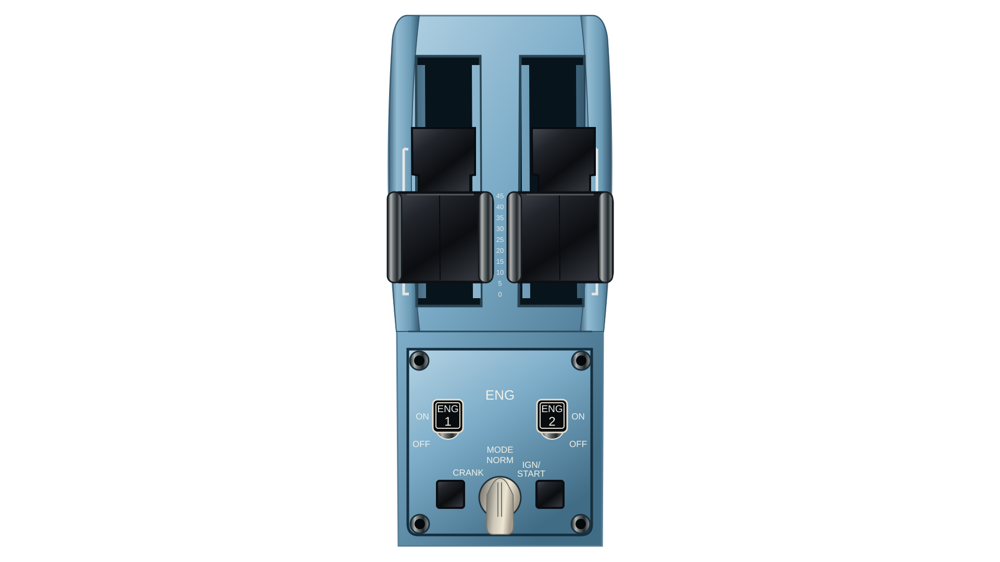
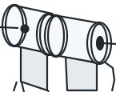

TCA control configuration
Choose a mode, map your controls, then run emulate.cmd.
Your setup
Choose the output your game accepts. Your mappings stay on this computer.
Help choosing a mode
- Keyboard · TARGET
- Send keyboard keys through TARGET. Choose this when your game uses keyboard bindings. Requires TARGET and the Visual C++ runtime.
- Xbox · direct input
- Send Xbox controller inputs directly from the two devices. Choose this when your game accepts an Xbox controller. Requires ViGEmBus and the Visual C++ runtime.
- TARGET → Xbox
- Advanced route through TARGET's Combined controller: combine both devices before converting their inputs to Xbox output. Both Xbox modes send the same controller outputs. Use direct input for ordinary controller play; choose this route when your setup needs TARGET to combine the devices. Requires TARGET, ViGEmBus and the Visual C++ runtime.
Dependencies
Use the folder containing Plugins, scripts and TARGETGUI.
Keyboard layout
Hardware mappings
Stick movement controls flight. The POV controls the camera. Press a hardware button, select a control or click a number on its diagram to edit its binding. Automatic selection pauses while editing, capturing a key or saving.
Mapping overview · all controls
Review each output, or select a control to edit it. High-G overrides throttle input while held; an assigned button binding also remains active.
Choose your mode to begin.
Device diagrams and numbered controls
Match the L/R selector under your stick. Swappable grip caps may differ from the diagram; live input helps confirm the number.

Device diagram unavailable here. Use the control selector or mapping overview to edit every binding.
The central POV hat controls the camera. Slider/reverse button 17 is outside this example mapping.
Grip buttons · side view

Device diagram unavailable here. Use the control selector or mapping overview to edit every binding.
The POV is separate from button 2.
Official sidestick reference and manualEngine switches and mode selector

Device diagram unavailable here. Use the control selector or mapping overview to edit every binding.
Lever buttons · front view

Device diagram unavailable here. Use the control selector or mapping overview to edit every binding.
Buttons 7 and 8 share the mode selector. Buttons 9–16 are TARGET lever-detent states, listed in the selector and overview. Add-on panels are outside this setup.
Full quadrant diagram
Axes and calibration · optional
Keep these values unless your flight, camera or throttle input needs adjustment. The sidestick slider and quadrant's left lever share throttle direction and center deadzone. Moving either throttle beyond 1% of full travel transfers control to it; the idle throttle is ignored. The sidestick slider uses Z; the throttle axis selector below applies to the quadrant, or Combined Z in TARGET → Xbox.